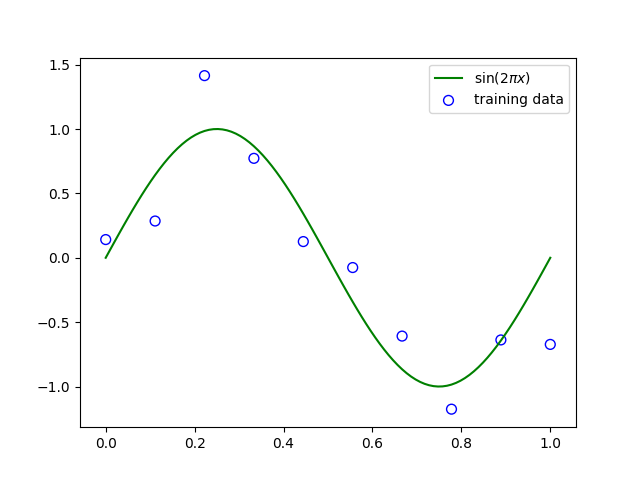

Pattern Recognition and Machine Learning Notes
Table of Contents
1 Introduction
1.0.1 main
The problem of searching for patterns in data is a fundamental one and has a long and successful history. For instance, the extensive astronomical observations of Tycho Brahe in the 16th century allowed Johannes Kepler to discover the empirical laws of planetary motion, which in turn provided a springboard for the development of classical mechanics. Similarly, the discovery of regularities in atomic spectra played a key role in the development and verification of quantum physics in the early twentieth century. The field of pattern recognition is concerned with the automatic discovery of regularities in data through the use of computer algorithms and with the use of these regularities to take actions such as classifying the data into different categories.
Figure 1: Examples of hand-written digits taken from US zip codes.
Consider the example of recognizing handwritten digits, illustrated in Figure 1. Each digit corresponds to a \(28×28\) pixel image and so can be represented by a vector x comprising 784 real numbers. The goal is to build a machine that will take such a vector x as input and that will produce the identity of the digit \(0, \cdots , 9\) as the output. This is a nontrivial problem due to the wide variability of handwriting. It could be tackled(解决) using handcrafted rules or heuristics(启发法) for distinguishing the digits based on the shapes of the strokes, but in practice such an approach leads to a proliferation(增值) of rules and of exceptions(异常) to the rules and so on, and invariably(不约而同地) gives poor results.
Far better results can be obtained by adopting a machine learning approach in which a large set of N digits \({x_1,\cdots,x_N}\) called a training set is used to tune(调节) the parameters of an adaptive model. The categories of the digits in the training set(训练集) are known in advance, typically by inspecting them individually and hand-labeling them. We can express the category of a digit using target vector(目标向量) \(t\), which represents the identity of the corresponding digit. Suitable techniques for representing categories in terms of vectors will be discussed later. Note that there is one such target vector \(t\) for each digit image \(x\).
The result of running the machine learning algorithm can be expressed as a function \(y(x)\) which takes a new digit image x as input and that generates an output vector y, encoded in the same way as the target vectors. The precise form of the function \(y(x)\) is determined during the training phase(训练阶段), also known as the learning phase(学习阶段), on the basis of the training data. Once the model is trained it can then determine the identity of new digit images, which are said to comprise(包含) a test set(测试阶段). The ability to categorize correctly new examples that differ from those used for training is known as generalization(泛化). In practical applications, the variability(变化性) of the input vectors will be such that the training data can comprise only a tiny fraction of all possible input vectors, and so generalization is a central goal in pattern recognition.
For most practical applications, the original input variables are typically pre-processed(预处理) to transform them into some new space of variables where, it is hoped, the pattern recognition problem will be easier to solve. For instance, in the digit recognition problem, the images of the digits are typically translated and scaled so that each digit is contained within a box of a fixed size. This greatly reduces the variability within each digit class, because the location and scale of all the digits are now the same, which makes it much easier for a subsequent(随后的) pattern recognition algorithm to distinguish between the different classes. This pre-processing stage is sometimes also called feature extraction(特征提取). Note that new test data must be pre-processed using the same steps as the training data.
Pre-processing might also be performed in order to speed up computation. For example, if the goal is real-time face detection(检测) in a high-resolution(高分辨率) video stream, the computer must handle huge numbers of pixels(像素) per second, and presenting these directly to a complex pattern recognition algorithm may be computationally infeasible(不可行的). Instead, the aim is to find useful features that are fast to compute, and yet that also preserve useful discriminatory(有辨识力的) information enabling faces to be distinguished from non-faces. These features are then used as the inputs to the pattern recognition algorithm. For instance, the average value of the image intensity(图像灰度) over a rectangular subregion can be evaluated extremely efficiently (Viola and Jones, 2004), and a set of such features can prove very effective in fast face detection. Because the number of such features is smaller than the number of pixels, this kind of pre-processing represents a form of dimensionality reduction(维数降低). Care must be taken during pre-processing because often information is discarded, and if this information is important to the solution of the problem then the overall accuracy of the system can suffer.
Applications in which the training data comprises examples of the input vectors along with their corresponding target vectors are known as supervised learning(监督学习) problems. Cases such as the digit recognition example, in which the aim is to assign each input vector to one of a finite number of discrete categories, are called classification(分类) problems. If the desired output consists of one or more continuous variables, then the task is called regression(回归). An example of a regression problem would be the prediction of the yield in a chemical manufacturing process in which the inputs consist of the concentrations(浓度) of reactants(反应物), the temperature, and the pressure.
In other pattern recognition problems, the training data consists of a set of input vectors x without any corresponding target values. The goal in such unsupervised learning(无监督学习) problems may be to discover groups of similar examples within the data, where it is called clustering(聚类), or to determine the distribution of data within the input space, known as density estimation(密度估计), or to project the data from a high-dimensional space down to two or three dimensions for the purpose of visualization(数据可视化).
Finally, the technique of reinforcement learning(反馈学习) (Sutton and Barto, 1998) is concerned with the problem of finding suitable actions to take in a given situation in order to maximize a reward. Here the learning algorithm is not given examples of optimal outputs, in contrast to supervised learning, but must instead discover them by a process of trial and error. Typically there is a sequence of states and actions in which the learning algorithm is interacting(交互) with its environment. In many cases, the current action not only affects the immediate reward but also has an impact on the reward at all subsequent time steps. For example, by using appropriate reinforcement learning techniques a neural network can learn to play the game of backgammon(西洋双陆棋) to a high standard (Tesauro, 1994). Here the network must learn to take a board position as input, along with the result of a dice throw, and produce a strong move as the output. This is done by having the network play against a copy of itself for perhaps a million games. A major challenge is that a game of backgammon can involve dozens of moves, and yet it is only at the end of the game that the reward, in the form of victory, is achieved. The reward must then be attributed appropriately to all of the moves that led to it, even though some moves will have been good ones and others less so. This is an example of a credit assignment(信用分配) problem. A general feature of reinforcement learning is the trade-off(权衡) between exploration(探索), in which the system tries out new kinds of actions to see how effective they are, and exploitation(利用), in which the system makes use of actions that are known to yield a high reward. Too strong a focus on either exploration or exploitation will yield poor results. Reinforcement learning continues to be an active area of machine learning research. However, a detailed treatment lies beyond the scope of this book.
Although each of these tasks needs its own tools and techniques, many of the key ideas that underpin(从下面支撑) them are common to all such problems. One of the main goals of this chapter is to introduce, in a relatively informal way, several of the most important of these concepts and to illustrate them using simple examples. Later in the book we shall see these same ideas re-emerge in the context of more sophisticated models that are applicable to real-world pattern recognition applications. This chapter also provides a self-contained introduction to three important tools that will be used throughout the book, namely probability theory, decision theory, and information theory. Although these might sound like daunting(令人生畏的) topics, they are in fact straightforward, and a clear understanding of them is essential if machine learning techniques are to be used to best effect in practical applications.
1.1 Example: Polynomial Curve Fitting
We begin by introducing a simple regression problem, which we shall use as a running example throughout this chapter to motivate a number of key concepts. Suppose we observe a real-valued input variable \(x\) and we wish to use this observation to predict the value of a real-valued target variable \(t\). For the present purposes, it is instructive(有启发性的) to consider an artificial example using synthetically(合成地,人造地) generated data because we then know the precise process that generated the data for comparison against any learned model. The data for this example is generated from the function \(sin(2πx)\) with random noise included in the target values, as described in detail in Appendix A.
Now suppose that we are given a training set comprising \(N\) observations of \(x\), written \(x \equiv (x_1, \cdots, x_N)^T\) , together with corresponding observations of the values of \(t\), denoted \(t \equiv (t_1, \cdots , t_N )^T\). Figure 2 shows a plot of a training set comprising \(N = 10\) data points. The input data set x in Figure 2 was generated by choosing values of \(x_n\), for \(n = 1, \cdots, N\), spaced uniformly in range \([0,1]\), and the target data set \(t\) was obtained by first computing the corresponding values of the function \(sin(2πx)\) and then adding a small level of random noise having a Gaussian distribution (the Gaussian distribution is discussed in Section 1.2.4(?)) to each such point in order to obtain the corresponding value \(t_n\).

Figure 2: Plot of a training data set of \(N = 10\) points, shown as blue circles, each comprising an observation of the input variable x along with the corresponding target variable t. The green curve shows the function \(sin(2πx)\) used to generate the data. Our goal is to predict the value of \(t\) for some new value of \(x\), without knowledge of the green curve.